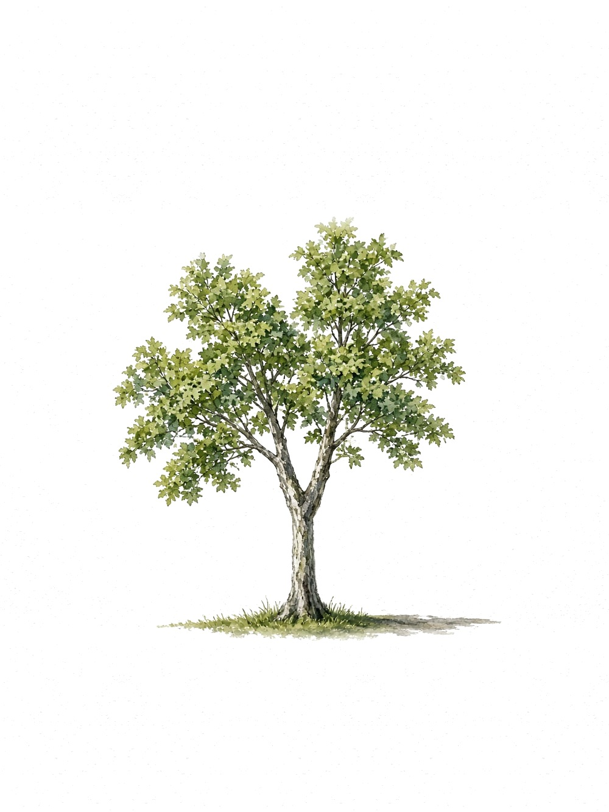

RecordNo. 001
Red oak
Quercus rubra
| Common name | Red oak |
|---|---|
| Botanical name | Quercus rubra |
| Address | 857 Malkin Ave Vancouver, BC |
| Height | 16.8 m |
| Trunk diameter | 55.9 cm (DBH) |
| Latitude | 49.275025 |
| Longitude | -123.082869 |
Source: City of Vancouver public trees inventory.